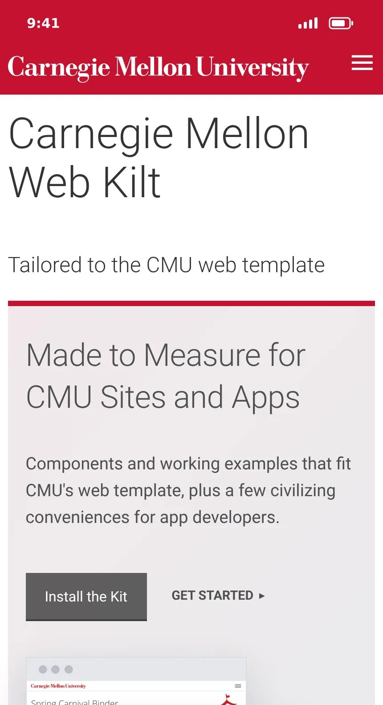
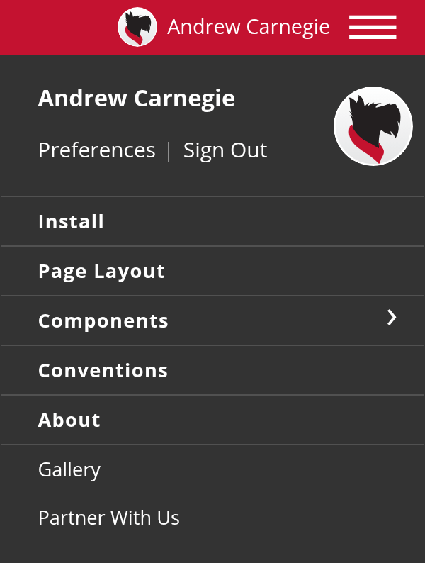
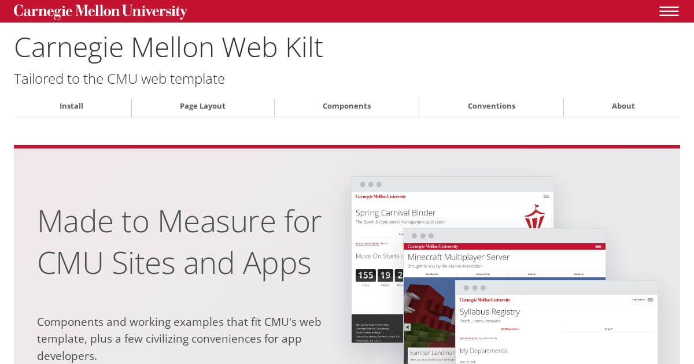

Media and Embeds
Photos, screenshots, videos and embedded pages inside a section: captions and credits, browser and phone frames, and images that enlarge on click.
Photos Template
A photo in the page. The template fits it to its column, on phones too. A photo across the top of a page? Use the Full-Width Photo Hero; for several photos, the Photo Grid.
-
Write alt text that says what's in the photo. A photo that's only
decoration gets an empty one (
alt=""). -
Keep its
widthandheight, so the page doesn't jump as the photo loads. -
Add
loading="lazy"to a photo further down the page, so it loads only when someone scrolls to it.
Classes
img
A photo across the column:
In Cascade
Insert an image in the page's content, and fill in its alt text.
In WordPress
Insert an Image block, and fill in its Alternative text.
Photo Captions and Credits Template
A photo with a caption under it. Use Cascade's image block, or
figure.image with a <figcaption>: the template sets
the caption in italics and spaces the figure from the text below. Put
floatright or floatleft on the image to set the figure
beside the text at half width; on phones it goes full width.
Credits go at the end of the caption, in parentheses, in the caption's own style; CMU sites don't use a separate credit line or credit class.
- Photos by University Communications & Marketing need no credit.
- Someone else's photo or work: "(Courtesy of Name)" for a photo given to you, or "(Photo: Name)" for a photographer.
- Creative Commons: Name the author, link the source and the license, and say if you changed it: "(Photo: Author, CC BY 4.0, cropped)."
- Never put the credit in the alt text. Alt text describes the picture; a screen reader would read a credit there as part of it.
Classes
figure.image, figcaption, floatright,
floatleft
Under the Photo
A caption under the photo, with its credit:
Beside the Text
A photo floated beside the text with floatright:
The page's own text goes here, beside the photo. The figure floats right at half width from 550px up, and the text wraps around it.
Screenshots CMS
A screenshot of a page or an app, set off from the page around it with a thin border
and a soft shadow, in a figure.cmu-shot. It can be drawn in a browser
window or a phone. A <figcaption> under it is italic, like the
template's photo captions. Ideally, the screenshot shows the page's top, roof and all.
Always write alt text that says what's on it.
- To let people see it up close, link it to its full-size image; see Enlarge on Click.
- To pair it with a short explanation, use Text With a Screenshot.
-
To show two or three side by side, put them in a
cmu-shots; see Side by Side. - To feature it at the top of a page, use one screenshot or a stack of two or three in a Split Hero.
Classes
figure.cmu-shot, cmu-shot--browser,
cmu-shot--phone, cmu-shots, data-cmu-address
With a Border or a Browser Window
Add cmu-shot--browser for a browser window, with a bar and three dots
across the top; the window is as wide as the screenshot, never wider than the column.
To show the page's address in the bar, add data-cmu-address with it, such
as www.cmu.edu/example/; leave off the https://. It's
decorative, so the alt text still says what's on the screenshot:

In a Phone Frame
Add cmu-shot--phone for a page as it looks on a phone. Make the
screenshot 430 × 790 pixels (or twice that for a sharper image), with a phone's
status bar across the top for the camera cutout to sit over. FencePost's
phone shot
makes exactly that. The screen is a bit shorter than a real phone's, so a taller
screenshot shows only its top. The frame is never wider than 18rem:

Side by Side
Put two or three screenshots in a <div class="cmu-shots"> to set
them side by side, each with its own caption, such as the same page on a computer and
a phone, or the steps of a task. A phone keeps its width and the others share the
rest; a browser window beside a phone is cropped to the phone's height, so their
captions line up. Frames line up by their tops; a screenshot without a frame lines up
with the image in a browser window. A div inside the
cmu-shots stacks figures in one column. On a narrow screen, they go one
per line:

Examples CMS
A screenshot or picture of something in use, on a light gray mat with a small label at
its top, so it reads apart from the thing itself. Use it beside an image people copy
or download, to show where it goes. Put a cmu-label and the
screenshot in a div.cmu-example; the picture
is centered on the mat, however narrow it is.
Classes
cmu-example, cmu-label
Example

Link Preview Card CMS
A picture of how a shared link looks in Slack, Teams or a social post, for a page that
explains or checks link previews. Put a
cmu-link-preview in a screenshot frame: the
image, then a cmu-link-preview-text with the site, the title in
<strong> and the description:
Classes
cmu-link-preview, cmu-link-preview-text

Transparent Images CMS
An image with see-through parts, such as a logo, a cutout or a generated image, over a
light checkerboard, the way image editors show transparency. Use it where people pick
or check an image, such as a preview of one they're about to download; on an ordinary
page, let the image sit on the page's own background. Add
cmu-transparent to the image, or to a <figure> holding
it, with or without a screenshot frame.
Classes
cmu-transparent

Enlarge on Click CMSScript
A screenshot or a photo that people can select to see up close. Link the image to its
full-size version and add data-cmu-zoom: selecting it opens the image
over the page, with the page dimmed behind it. Escape, the close button or a click or
tap anywhere closes it, and focus goes back to the image. Without the script, the link
opens the image itself. An image much taller than the window, such as a whole page,
opens at full width and scrolls. The enlarged image uses the image's alt text, so
write that as usual. It works on a screenshot in any frame, a photo or a plain image.
Classes
data-cmu-zoom, cmu-zoom

Videos Template
A YouTube video in the page, or beside a few sentences about it in a section. Paste
YouTube's embed code (Share, then Embed) and keep its
width and height: the template's script fits the video to
its column and keeps that shape, on phones too.
Video across the top of a page? Use the
Silent Video Hero.
-
Give it a
titlethat names the video, not "YouTube video player": screen readers announce it for the frame. -
Use
youtube-nocookie.comin the address instead ofyoutube.com, so YouTube doesn't set its tracking cookies until someone plays the video. - Turn on captions in YouTube, and check them: automatic captions get names and terms wrong.
-
Add
loading="lazy"so the video loads only when someone scrolls to it.
Classes
iframe, grid column2 grey
On Its Own
A video across the column:
Beside Its Description
A video and a few sentences about it, in a gray section:
CMU and the I'm fine. Project
A few sentences about the video: who's in it, and why to watch.
Embedded Page CMS
A page from another site shown in a frame, such as a dashboard or a form. Give the
<iframe> the cmu-embed class, and it fills its column
at any screen size; set its height in the height attribute, tall enough
for what's in it. The template sizes YouTube and other video frames itself (see
Videos), but no others.
-
Give it a
titlethat names what's in it: screen readers announce it for the frame. -
Link to it below, as an ordinary
externallink, for people who'd rather open it in a tab of its own, and for phones, where a tall frame is hard to scroll. -
Add
loading="lazy"so it loads only when someone scrolls to it. -
Set
heightto a number of pixels, such asheight="700", with no units or CSS in it. Leave outframeborderandscrolling, which are obsolete; the class handles the border and the width. - Embed only pages that allow it. Many sites forbid being framed, and the frame then stays blank; check it on a test page first.
Classes
cmu-embed